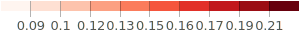

Vaccine Hesitancy for COVID-19 Versus 2020 Election Results
Red states seem to be more hesitant for vaccines.
Is this a good sign?
Hesitant Rate for Red States and Blue States

Note: The hesitance data is based on PUMA COVID-19 Hesitancy Data at https://data.cdc.gov/Vaccinations/COVID-19-County-Hesitancy/c4bi-8ytd. The election result is scraped from results published from the New York Times, Politico and Fox News at https://github.com/tonmcg/US_County_Level_Election_Results_08-20.